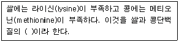

제과기능사 (2009-03-29 기출문제)
1과목: 제조이론
1. 파이 껍질이 질기고 단단하였다, 그 원인이 아닌 것은?
- 강력분을 사용하였다.
- 반죽시간이 길었다.
- 밀어 펴기를 덜하였다.
- 자투리 반죽을 많이 썼다.
(정답률: 47%)

2. 다음 쿠키 중 반죽형이 아닌 것은?
- 드롭 쿠키
- 스냅 쿠키
- 쇼트브레드 쿠키
- 스펀지 쿠키
(정답률: 72%)
3. 도넛에 묻힌 설탕이 녹는 현상(발한)을 감소시키기 위한 조치로 틀린 것은?
- 도넛에 묻히는 설탕의 양을 증가시킨다.
- 충분히 냉각시킨다.
- 냉각 중 환기를 많이 시킨다.
- 가급적 짧은 시간 동안 튀긴다.
(정답률: 61%)
4. 총 사용물량 500g, 수돗물 온도 20℃, 사용할 물 온도 14℃일 때, 얼음사용량은?
- 30g
- 32g
- 34g
- 36g
(정답률: 44%)
5. 퍼프 페이스트리 제조 시 팽창이 부족하여 부피가 빈약해지는 결점의 원인에 해당하지 않는 것은?
- 반죽의 휴지가 길었다.
- 밀어 펴기가 부적절하였다.
- 부적절한 유지를 사용하였다.
- 오븐의 온도가 너무 높았다
(정답률: 43%)
6. 다음 중 제과 생산관리에서 제1차 관리 3대 요소가 아닌 것은?
- 사람(Man)
- 재료(Material)
- 방법(Method)
- 자금(Money)
(정답률: 68%)
7. 데커레이션(decoration) 케이크의 장식에 사용되는 분당의 성분은?
- 포도당
- . 설탕
- 과당
- 전화당
(정답률: 73%)
8. 반죽의 비중과 관계가 가장 적은 것은?
- 제품의 부피
- 제품의 기공
- 제품의 조직
- 제품의 점도
(정답률: 78%)
9. 다음 중 비용적이 가장 큰 제품은?
- 파운드케이크
- 레이어 케이크
- 스펀지케이크
- 식빵
(정답률: 60%)
10. 젤리 롤 케이크 반죽 굽기에 대한 설명으로 틀린 것은?
- 두껍게 편 반죽은 낮은 온도에서 굽는다.
- 구운 후 철판에서 꺼내지 않고 냉각시킨다.
- 양이 적은 반죽은 높은 온도에서 굽는다.
- 열이 식으면 압력을 가해 수평을 맞춘다.
(정답률: 77%)
11. 다음의 머랭(meringue) 중에서 설탕을 끓여서 시럽으로 만들어 제조하는 것은?
- 이탈리안 머랭
- 스위스 머랭
- 냉제 머랭
- 온제 머랭
(정답률: 88%)
12. 튀김기름의 품질을 저하시키는 요인으로만 나열된 것은?
- 수분, 탄소, 질소
- 수분, 공기, 반복가열
- 공기, 금속, 토코페롤
- 공기, 탄소, 세사몰
(정답률: 83%)
13. 머랭 (meringue) 을 만드는 주요 재료는?
- 달걀흰자
- 전란
- 달걀노른자
- 박력분
(정답률: 92%)
14. 완제품 440g인 스펀지케이크 500개를 주문 받았다. 굽기 손실이 12%라면, 준비해야 할 전체 반죽 량은?
- 125kg
- 250kg
- 300kg
- 600kg
(정답률: 70%)
15. 푸딩을 제조할 때 경도의 조절은 어떤 재료에 의하여 결정되는가?
- 우유
- 설탕
- 계란
- 소금
(정답률: 70%)
16. 빵의 포장재에 대한 설명으로 틀린 것은?
- 방수성이 있고 통기성이 있어야 한다.
- 포장을 하였을 때 상품의 가치를 높여야 한다.
- 값이 저렴해야 한다.
- 포장 기계에 쉽게 적용할 수 있어야 한다.
(정답률: 79%)
17. 식빵 제조시 부피를 가장 크게 하는 쇼트닝의 적정한 비율은?
- 4~6%
- 8~11%
- 13~16%
- 18~20%
(정답률: 56%)
18. 스트레이트법에 의한 제빵 반죽시 보통 유지를 첨가하는 단계는?
- 픽업 단계
- 클린업 단계
- 발전 단계
- 렛 다운 단계
(정답률: 69%)
19. 정형기(Moulder)의 작동 공정이 아닌 것은?
- 둥글리기
- 밀어펴기
- 말기
- 봉하기
(정답률: 63%)
20. 제빵시 적량보다 많은 분유를 사용했을 때의 결과 중 잘못된 것은?
- 양옆면과 바닥이 움푹 들어가는 현상이 생김
- 껍질색은 캐러멜화에 의하여 검어짐
- 모서리가 예리하고 터지거나 슈레드가 적음
- 세포벽이 두꺼우므로 황갈색을 나타냄
(정답률: 50%)
2과목: 재료과학
21. 냉동 반죽법의 장점이 아닌 것은?
- 소비자에게 신선한 빵을 제공할 수 있다.
- 운동, 배달이 용이하다.
- 가스 발생력이 향상된다.
- 다품종 소량생산이 가능하다.
(정답률: 65%)
22. 다음 중 생산관리의 목표는?
- 재고, 출고, 판매의 관리
- 재고, 납기, 출고의 관리
- 납기, 재고, 품질의 관리
- 납기, 원가, 품질의 관리
(정답률: 48%)
23. 둥글리기의 목적이 아닌 것은?
- 글루텐의 구조와 방향정돈
- 수분 흡수력 증가
- 반죽의 기공을 고르게 유지
- 반죽 표면에 얇은 막 형성
(정답률: 71%)
24. 표준 스펀지/ 도법에서 스펀지 발효시간은?
- 1시간~2시간 30분
- 3시간~4시간 30분
- 5시간~6시간
- 7시간~8시간
(정답률: 61%)
25. 단백질 함량이 2% 증가된 강력밀가루 사용시 흡수율의 변화의 가장 적당한 것은?
- 2% 감소
- 1.5% 증가
- 3% 증가
- 4.5% 증가
(정답률: 40%)
26. 정형하여 철판에 반죽을 놓을 때 , 일반적 사용시 흡수율의 변화로 가장 적당한 것은?
- 약10℃
- 25℃
- 32℃
- 55℃
(정답률: 57%)
27. 2% 이스트를 사용했을 때 최적 발효시간이 120분이라면 2.2%의 이스트를 사용했을 때의 예상발효시간은?
- 130분
- 109분
- 100분
- 90분
(정답률: 60%)
28. 빵굽기 과정에서 오븐스프링(oven spring)에 의한 반죽부피의 팽창 정도로 가장 적당한 것은?
- 본래 크기의 약 1/2 까지
- 본래 크기의 약 1/3 까지
- 본래 크기의 약 1/5 까지
- 본래 크기의 약 1/6 까지
(정답률: 70%)
29. 스펀지법에서 스펀지 반죽의 가장 적합한 반죽 온도는?
- 13~15 ℃
- 18~20 ℃
- 23~25 ℃
- 30~32℃
(정답률: 77%)
30. 일반적인 빵 제조시 2차 발효실의 가장 적합한 온도는?
- 25~30 ℃
- 30~35 ℃
- 35~40 ℃
- 45~50 ℃
(정답률: 67%)
3과목: 영양학
31. 제빵에 가장 적합한 물의 경도는?
- 0~60 ppm
- 120~180 ppm
- 180~360 ppm
- 360 ppm 이상
(정답률: 83%)
32. 전분의 호화 현상에 대한 설명으로 틀린 것은?
- 전분의 종류에 따라 호화 특성이 달라진다.
- 전분현탁액에 적당량의 수산화나트륨(NaOH)을 가하면 가열하지 않아도 호화 돌 수 있다.
- 수분이 적을수록 호화가 촉진된다.
- 알칼리성일 때 호화가 촉진된다.
(정답률: 63%)
33. 다음 중 신선한 달걀의 특징은?
- 난각 표면에 광택이 없고 선명하다.
- 난각 표면이 매끈하다.
- 난각에 광택이 았다.
- 난각 표면에 기름기가 있다.
(정답률: 81%)
34. 밀가루의 단백질 함량이 증가하면 패리노그래프 흡수율은 증가하는 경향을 보인다. 밀가루의 등급이 낮을수록 패리노그래프에 나타나는 현상은?
- 흡수율은 증가하나 반죽시간과 안정도는 감소한다.
- 흡수율은 감소하고 반죽시간과 안정도는 감소한다.
- 흡수율은 증가하나 반죽시간과 안정도는 변화가 없다.
- 흡수율은 감소하나 반죽시간과 안정도는 변화가 없다.
(정답률: 51%)
35. 물 100g 에 설탕 25g을 녹이면 당도는?
- 20%
- 30%
- 40%
- 50%
(정답률: 54%)
36. 밀가루의 일반적인 자연숙성 기간은?
- 1~2주
- 2~3개월
- 4~5개월
- 5~6개월
(정답률: 68%)
37. 식품향료에 대한 설명 중 틀린 것은?
- .자연향료는 자연에서 채취한 후 추출, 정재, 농축, 분리 과정을 거쳐 얻는다.
- 합성향료는 석유 및 석탄류에 포함되어 있는 방향성유기물질로부터 합성하여 만든다.
- 조합향료는 천연향료와 합성향료를 조합하여 양자 간의 문제점을 보완한 것이다.
- 식품에 사용하는 향료는 첨가물이지만, 품질, 규격 및 사용법을 존수하지 않아도 된다.
(정답률: 80%)
38. 유지에 알칼리를 가할 때 일어나는 반응은?
- 가수분해
- 비누화
- 에스테르화
- 산화
(정답률: 57%)
39. 압착효모(생이스트)의 일반적인 고형분 함량은?
- 10%
- 30%
- 50%
- 60%
(정답률: 72%)
40. 초콜릿을 탬퍼링한 효과에 에 대한 설명중 틀린 것은?
- 입안에서의 용해성이 나쁘다.
- 광택이 좋고 내부 조직이 조밀하다.
- 팻 브롬(fat bloom)이 일어나지 않는다.
- 안정한 결정이 않고 결정형이 일정하다.
(정답률: 82%)
41. 분유의 종류에 대한 설명으로 틀린 것은?
- 혼합분유 : 연유에 유청을 가하여 분말화 한 것
- 전지분유 : 원유에서 수분을 제거 하여 분말화 한 것
- 탈지분유 : 탈지유에서 수분을 제거하여 분말화 한 것
- 가당분유 : 원유에 당류를 가하여 분말화 한 것
(정답률: 65%)
42. 밀가루를 체로 쳐서 사용하는 이유와 가장 거리가 먼 것은?
- 불순물 제거
- 공기의 혼입
- 재료 분산
- 표피색 개선
(정답률: 74%)
43. 제빵에 사용되는 효모와 가장 거리가 먼 효소는?
- 프로테아제
- 셀룰라아제
- 인버타아제
- 말타아제
(정답률: 64%)
44. 튀김기름을 해치는 4대 적이 아닌 것은?
- 온도
- 포도당
- 공기
- 항산화제
(정답률: 62%)
45. 제과에 많이 쓰이는 “럼주”의 원료는?
- 옥수수 전분
- 포도당
- 당밀
- 타피오카
(정답률: 77%)
46. 아래의 쌀과 콩에 대한 설명 중 ()에 알맞은 것은?

- 제한아미노산
- 필수 아미노산
- 불필수아미노산
- 아미노산 불균형
(정답률: 55%)
47. 이당류에 속하는 것은?
- 유당
- 갈락토오스
- 과당
- 포도당
(정답률: 71%)
48. 제과, 제빵제조시 사용되는 버터에 포함된 지방의 기능이 아닌 것은?
- 에너지의 급원식품이다.
- 체온유지에 관여한다.
- 항체를 생성하고 효소를 만든다.
- 음식에 맛과 향미를 준다.
(정답률: 62%)
49. 체내에서 사용한 단백질은 주로 어떤 경로를 통해 배설되는가?
- 호흡
- 소변
- 대변
- 피부
(정답률: 66%)
50. 순수한 지방 20g이 내는 열량은?
- 80kcal
- 140kcal
- 180kcal
- 200kcal
(정답률: 78%)
4과목: 식품위생학
51. 어떤 첨가물의 LD50의 값이 작을 때의 의미로 옳은 것은?
- 독성이 크다.
- 독성이 적다.
- 저장성이 나쁘다.
- 저장성이 좋다.
(정답률: 58%)
52. 식품위생 검사의 종류로 틀린 것은?
- 화학적 검사
- 관능 검사
- 혈청학적 검사
- 물리학적 검사
(정답률: 62%)
53. 인수공통 전염병의 예방조치로 바람직하지 않은 것은?
- 우유의 멸균처리를 철저히 한다.
- 이환된 동물의 고기는 익혀서 먹는다.
- 가축의 예방접종을 한다.
- 외국으로부터 유입되는 가축은 항구나 공항 등에서 검역을 철저히 한다.
(정답률: 70%)
54. 테트로도톡신(tetrodotoxin)은 어떤 식중독의 원인 물질인가?
- 조개 식중독
- 버섯 식중독
- 복어 식중독
- 감자 식중독
(정답률: 81%)
55. 산양, 양, 돼지, 소에게 감염되면 유산을 일으키고, 인체 감염시 고열이 주기적으로 일어나는 인수 공통 전염병은?
- 광우병
- 공수병
- 파상열
- 신증후군출혈열
(정답률: 79%)
56. 식품의 관능을 만족시키기 위해 첨가하는 물질은?
- 강화제
- 보존제
- 발색제
- 이형제
(정답률: 56%)
57. 경구전염병에 속하지 않는 것은?
- 장티푸스
- 말라리아
- 세균성 이질
- 콜레라
(정답률: 65%)
58. 다음 중 곰팡이독과 관계가 없는 것은?
- 파툴린(patulin)
- 아플라톡신(aflatoxin)
- 시트리닌(citrinin)
- 고시풀(gossypol)
(정답률: 74%)
59. 대장균의 일반적인 특성에 대한 설명으로 옳은 것은?
- 분변오염의 지표가 된다.
- 경피전염병을 일으킨다.
- 독소형 식중독을 일으킨다.
- 발효식품 제조에 유용한 세균이다.
(정답률: 67%)
60. 다음 중 감염형 식중독을 일으키는 것은?
- 보톨리누스균
- 살모넬라균
- 포도상구균
- 고초균
(정답률: 68%)